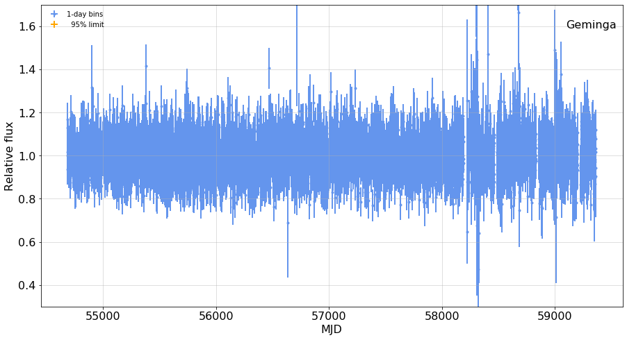

---

title: Kerr Comparison

keywords: fastai
sidebar: home_sidebar

summary: "A few plots to compare with M. Kerr's results"
description: "A few plots to compare with M. Kerr's results"
nb_path: "nbs/kerr_comparison.ipynb"
---
<!--

#################################################
### THIS FILE WAS AUTOGENERATED! DO NOT EDIT! ###
#################################################
# file to edit: nbs/kerr_comparison.ipynb
# command to build the docs after a change: nbdev_build_docs

-->

<div class="container" id="notebook-container">
        
    {% raw %}
    
<div class="cell border-box-sizing code_cell rendered">

</div>
    {% endraw %}

    {% raw %}
    
<div class="cell border-box-sizing code_cell rendered">

<div class="output_wrapper">
<div class="output">

<div class="output_area">

<div class="output_subarea output_stream output_stdout output_text">
<pre>Sat May  8 06:47:51 PDT 2021
</pre>
</div>
</div>

</div>
</div>

</div>
    {% endraw %}

<div class="cell border-box-sizing text_cell rendered"><div class="inner_cell">
<div class="text_cell_render border-box-sizing rendered_html">
<p>This notebook generates plots for two of the sources that he examined,
and compare with figures from the  <a href="https://arxiv.org/pdf/1910.00140.pdf">Kerr paper</a>.</p>
<p>Note the use of <code>ipynb_docgen</code> allowing a cell to create a document mixing markdown and plots. Each of the plots
below is displayed as a link to an attached file, and can be clicked on to see the orginal.</p>

</div>
</div>
</div>
    {% raw %}
    
<div class="cell border-box-sizing code_cell rendered">
<details class="description">
      <summary data-open="Hide Code" data-close="Show Code"></summary>
        <summary></summary>
        <div class="input">

<div class="inner_cell">
    <div class="input_area">
<div class=" highlight hl-ipython3"><pre><span></span><span class="kn">from</span> <span class="nn">wtlike</span> <span class="kn">import</span> <span class="o">*</span>
<span class="kn">from</span> <span class="nn">utilities.ipynb_docgen</span> <span class="kn">import</span> <span class="o">*</span>

<span class="k">def</span> <span class="nf">kerr_test</span><span class="p">():</span>
    <span class="sd">&quot;&quot;&quot;</span>
<span class="sd">    </span>
<span class="sd">    #### A bright pulsar, {lc1.source.name}:</span>
<span class="sd">    {print_out1}    </span>
<span class="sd">    {fig1}    </span>
<span class="sd">    This is to be compared with Kerr&#39;s Figure 1:    </span>
<span class="sd">    {kerr_fig1}</span>
<span class="sd">   </span>
<span class="sd">    #### A flaring AGN, {lc2.source.name}</span>
<span class="sd">    {print_out2}</span>
<span class="sd">    {fig2}</span>
<span class="sd">    </span>
<span class="sd">    This corresponds to the upper central panel in Kerr&#39;s Figure 2.</span>
<span class="sd">    {kerr_fig2}</span>
<span class="sd">    &quot;&quot;&quot;</span>

    <span class="n">plt</span><span class="o">.</span><span class="n">rc</span><span class="p">(</span><span class="s1">&#39;font&#39;</span><span class="p">,</span> <span class="n">size</span><span class="o">=</span><span class="mi">16</span><span class="p">)</span>


    <span class="k">with</span> <span class="n">capture_print</span><span class="p">(</span><span class="s1">&#39;output from this analysis&#39;</span><span class="p">)</span> <span class="k">as</span> <span class="n">print_out1</span><span class="p">:</span>
        <span class="n">lc1</span> <span class="o">=</span> <span class="n">WtLike</span><span class="p">(</span><span class="s1">&#39;Geminga&#39;</span><span class="p">,</span> <span class="n">time_bins</span><span class="o">=</span><span class="p">(</span><span class="mi">0</span><span class="p">,</span><span class="mi">0</span><span class="p">,</span><span class="mi">1</span><span class="p">))</span>
        <span class="n">fig1</span> <span class="o">=</span> <span class="n">figure</span><span class="p">(</span> 
                    <span class="n">lc1</span><span class="o">.</span><span class="n">plot</span><span class="p">(</span><span class="n">fignum</span><span class="o">=</span><span class="mi">1</span><span class="p">,</span> <span class="n">figsize</span><span class="o">=</span><span class="p">(</span><span class="mi">15</span><span class="p">,</span><span class="mi">8</span><span class="p">),</span><span class="n">colors</span><span class="o">=</span><span class="p">(</span><span class="s1">&#39;cornflowerblue&#39;</span><span class="p">,</span> <span class="s1">&#39;orange&#39;</span><span class="p">),</span>
                             <span class="n">ylim</span><span class="o">=</span><span class="p">(</span><span class="mf">0.3</span><span class="p">,</span><span class="mf">1.7</span><span class="p">),</span> <span class="n">ts_bar_min</span><span class="o">=</span><span class="mi">4</span><span class="p">,),</span>
                    <span class="n">caption</span><span class="o">=</span><span class="s1">&#39;&#39;</span><span class="p">,</span>   <span class="n">width</span><span class="o">=</span><span class="mi">500</span><span class="p">,</span> <span class="p">)</span>
        
    <span class="n">kerr_fig1</span> <span class="o">=</span> <span class="n">image</span><span class="p">(</span><span class="s1">&#39;kerr_fig1.png&#39;</span><span class="p">,</span> <span class="n">width</span><span class="o">=</span><span class="mi">300</span><span class="p">,</span> <span class="n">caption</span><span class="o">=</span><span class="s1">&#39;Kerr Figure 1&#39;</span><span class="p">)</span>
    
    <span class="k">with</span> <span class="n">capture_print</span><span class="p">(</span><span class="s1">&#39;output from this analysis&#39;</span><span class="p">)</span> <span class="k">as</span> <span class="n">print_out2</span><span class="p">:</span>
        <span class="n">lc2</span> <span class="o">=</span> <span class="n">WtLike</span><span class="p">(</span><span class="s1">&#39;3C 279&#39;</span><span class="p">,</span> <span class="n">time_bins</span><span class="o">=</span><span class="p">(</span><span class="mi">0</span><span class="p">,</span><span class="mi">0</span><span class="p">,</span><span class="mi">1</span><span class="p">))</span>
        <span class="n">fig2</span> <span class="o">=</span> <span class="n">figure</span><span class="p">(</span>
                    <span class="n">lc2</span><span class="o">.</span><span class="n">plot</span><span class="p">(</span> <span class="n">fignum</span><span class="o">=</span><span class="mi">2</span><span class="p">,</span> <span class="n">figsize</span><span class="o">=</span><span class="p">(</span><span class="mi">16</span><span class="p">,</span><span class="mi">10</span><span class="p">),</span> <span class="n">yscale</span><span class="o">=</span><span class="s1">&#39;log&#39;</span> <span class="p">,</span> 
                          <span class="n">colors</span><span class="o">=</span><span class="p">(</span><span class="s1">&#39;cornflowerblue&#39;</span><span class="p">,</span><span class="s1">&#39;orange&#39;</span><span class="p">),</span> <span class="n">ts_bar_min</span><span class="o">=</span><span class="mi">9</span><span class="p">,</span>
                         <span class="n">xlim</span><span class="o">=</span><span class="p">(</span><span class="mi">54750</span><span class="p">,</span> <span class="mi">54750</span><span class="o">+</span><span class="mi">700</span><span class="p">),</span>   <span class="n">ylim</span><span class="o">=</span><span class="p">(</span><span class="mf">0.05</span><span class="p">,</span><span class="mi">10</span><span class="p">)),</span>
                    <span class="n">caption</span><span class="o">=</span><span class="s1">&#39;&#39;</span><span class="p">,</span> <span class="n">width</span><span class="o">=</span><span class="mi">500</span><span class="p">,</span> <span class="p">)</span>
    <span class="n">kerr_fig2</span> <span class="o">=</span> <span class="n">image</span><span class="p">(</span><span class="s1">&#39;kerr_fig2.png&#39;</span><span class="p">,</span> <span class="n">width</span><span class="o">=</span><span class="mi">500</span><span class="p">,</span> <span class="n">caption</span><span class="o">=</span><span class="s1">&#39;Kerr Figure 2&#39;</span><span class="p">)</span>
   
    <span class="k">return</span> <span class="nb">locals</span><span class="p">()</span>


<span class="n">nbdoc</span><span class="p">(</span><span class="n">kerr_test</span><span class="p">)</span>
</pre></div>

    </div>
</div>
</div>

    </details>
<div class="output_wrapper">
<div class="output">

<div class="output_area">


<div class="output_markdown rendered_html output_subarea ">
<h4 id="A-bright-pulsar,-Geminga:">A bright pulsar, Geminga:<a class="anchor-link" href="#A-bright-pulsar,-Geminga:"> </a></h4><p><details  class="nbdoc-description" >  <summary> output from this analysis </summary>  <div style="margin-left: 5%"><pre>SourceData: photons and exposure for Geminga: Restoring from cache with key "Geminga_data"<br>WtLike: Source Geminga with:<br>  data:     1,213,841 photons from   2008-08-04 to 2021-05-05<br>     exposure: 3,117,669 intervals from 2008-08-04 to 2021-05-06<br>CellData: Bin photon data into 4657 1-day bins from 54683.0 to 59340.0<br>LightCurve: select 4530 cells for fitting with e&gt;0.5 & n&gt;2<br></pre></div> </details></p>
<div class="nbdoc_image">
<figure style="margin-left: 5%" title="Figure 1">  <a href="images/kerr_test_fig_01.png" title="images/kerr_test_fig_01.png">       </a>  <figcaption><b>Figure 1</b>. </figcaption></figure>
</div><p>This is to be compared with Kerr's Figure 1:</p>
<div class="nbdoc_image">
<figure style="margin-left: 5%" title="Figure 2">  <a href="images/kerr_test_fig_02.png" title="images/kerr_test_fig_02.png">       </a>  <figcaption><b>Figure 2</b>. Kerr Figure 1</figcaption></figure>
</div><h4 id="A-flaring-AGN,-3C-279">A flaring AGN, 3C 279<a class="anchor-link" href="#A-flaring-AGN,-3C-279"> </a></h4><p><details  class="nbdoc-description" >  <summary> output from this analysis </summary>  <div style="margin-left: 5%"><pre>SourceData: photons and exposure for 3C 279: Restoring from cache with key "3C 279_data"<br>WtLike: Source 3C 279 with:<br>     data:       179,695 photons from   2008-08-04 to 2021-04-21<br>     exposure: 2,817,749 intervals from 2008-08-04 to 2021-04-20<br>CellData: Bin photon data into 4642 1-day bins from 54683.0 to 59325.0<br>LightCurve: select 4472 cells for fitting with e&gt;0.5 & n&gt;2<br></pre></div> </details></p>
<div class="nbdoc_image">
<figure style="margin-left: 5%" title="Figure 3">  <a href="images/kerr_test_fig_03.png" title="images/kerr_test_fig_03.png">       </a>  <figcaption><b>Figure 3</b>. </figcaption></figure>
</div><p>This corresponds to the upper central panel in Kerr's Figure 2.</p>
<div class="nbdoc_image">
<figure style="margin-left: 5%" title="Figure 4">  <a href="images/kerr_test_fig_04.png" title="images/kerr_test_fig_04.png">       </a>  <figcaption><b>Figure 4</b>. Kerr Figure 2</figcaption></figure>
</div>
</div>

</div>

</div>
</div>

</div>
    {% endraw %}

</div>
 

